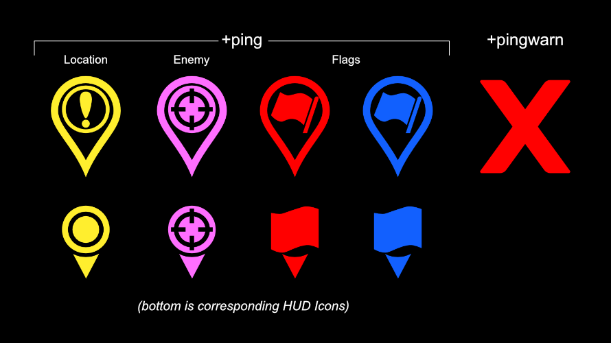
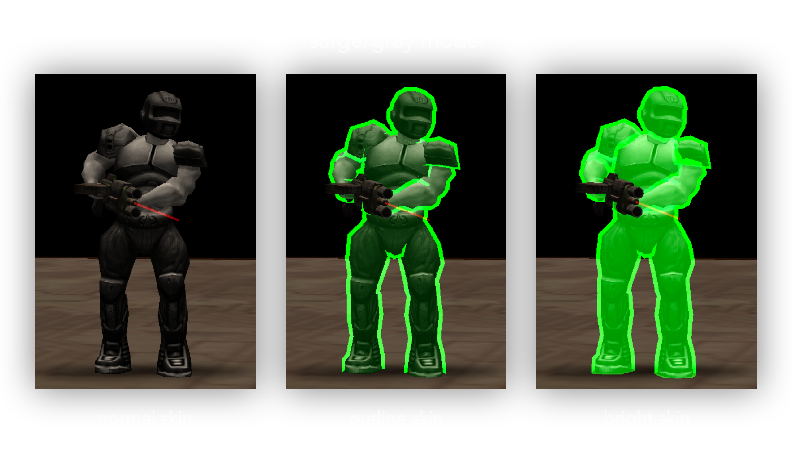
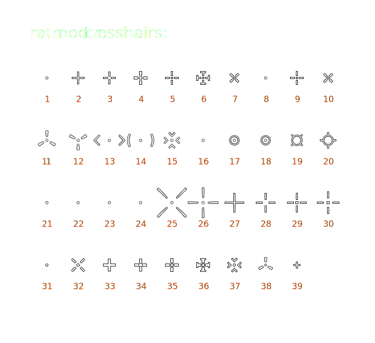

Config and Command Reference
Ratmod is configured with nice defaults. You may not need to change anything at all.
Not all of the settings listed here are available in the game menu so it is recommended to set up a config file in the ratmod directory. Name it autoexec.cfg. This file will be automatically loaded when you are in ratmod. In that file, write one setting per line.
To bind a command to a key or mouse button use bind. Write it in your config file with the following format:
bind <some key> <some command>- Example:
bind HOME ready
To set a CVAR setting in your config file, write with the following format:
set <cvar name> <setting>- Example:
set model sarge
To use a command directly in the in-game console, it must be preceeded with a slash: \command or /command.
Personalization
Be unique. Set your nickname by using set name "yourname". Also set your model with set model <modelname>. Use the body/head format to set the head differently. Example: set model beret/sarge
Personalize your rail color with a hue value from 0-360. Examples:
set color1 H240(rail core)set color2 H140(rail trail)
Helpful Binds and Commands
There are several commands that provide utilities or actions for gameplay.
Getting Help and Info
Display the Message of the Day / Help
\motd\help
Print a link to the documentation
\doc
Show the physics rules for the current server
\rules
Participating in Games
A true ninja is always ready:
bind HOME ready- Toggle between "ready" and "unready" state when there is warmup.
Commands for Joining Teams or Spectating:
\team f= free for all team or red/blue team depending on balance\team r= red team\team b= blue team\team s= spectator\team q= queue (for duel gametype or when the queue system is on)\team n= notready (queued in duel, but not selected for next game)\team a= afk (away from keyboard)
Spectator commands:
\followautoAutomatically cycle spectating through players. It also switches to flag carriers automatically in CTF.\game <1-5>select which game to watch. This only works for multi-tournament server while you are in spectator mode.
Calling for timeout:
bind PAUSE pausebind INS unpause
Items and Gameplay
Drop the currently held item
- Example:
bind m drop - If this is enabled by the server you will drop flags, weapons or ammo.
Displaying and Playing Taunts
\tauntwill print a list of all taunts\taunt <tauntname>will play a taunt from the list
Pings to mark a Location, Enemy, or Warning
The pings are designed to be a communication tool between team mates. Text-based messages can be difficult to see and read quickly. On the other hand, a visual ping with a sound is quickly understood. This can easily be used in combination with voice communication. The pings will be placed in the spot where your crosshairs are pointed at. There are two binds to use:
bind <key> +ping
- All of these pings will be shown to your teammates and they will hear a ping sound. If it is out of their field of view, a pointer will show up in their HUD (on the sides) showing them the direction of the ping.
- These pings are meant to draw attention to something, whether it be to "go there", or "enemy is over here" or "the flag is over there" etc.
- If you point at an empty area (wall or floor), this will show a location ping to your teammates.
- If you ping in close proximity to an enemy, the icon will change automatically to indicate that an enemy is there.
- If you ping in close proximity to your flag in CTF, a flag ping will be shown to your teammates. If you are carrying the flag and die, using the bind will show your teammates where the dropped flag is.
- Using
+pingright after you die will also produce a localized X and sound for nearby players.
bind <key> +pingwarn
- This will show an "X" icon with an error-type sound.
- Unlike
+ping, this is not global - it is not shown on HUD and the sound will not be heard far away. It is intended for communicating to players close to you. - Use this to warn your teammates of some danger. It can mean "Don't go there", "Stop", "Caution!" etc.
Here are what the icons look like, but in game they have some visual effects (scale and fade etc):

Check the Ping Icon Cusomization section for customizing the ping settings.
Drop token in Treasure Hunt gametype:
- Example:
bind MOUSE5 placeToken
Give up (Tournament gametype only)
\gg
Voting
Using the map vote menu
\mvwill open the menu\mv <filter>will open the menu with an applied filter.- Example:
\mv aggressorwill show all the maps containing the string "aggressor"
This is the screen that pops up with \mv:

List all available votes
\callvote\cv(short version)\cv customlist all available custom votes configured by the server
Change Arena
- Example
\arena 1 - This depends on the map. Try number 0-8
- This is only available for Rocket Arena mode with compatible maps.
CVAR Utilities
Reset all ratmod cvars
- USE WITH CAUTION, THIS WILL RESET ALL OF YOUR MOD SETTINGS
- Use
\resetcfg
Show all modified client game cvars
- Those cvars beginning with "cg_"
\cgconfig
Field of View and Zoom
Field of View (FOV) Settings
set cg_fov <value>to set your normal FOV.
Zoom Settings
set cg_zoomfov <value>to set your zoom fov.set cg_zoomToggle 1enables +zoom to toggle zoomset cg_zoomAnimScale 2increases the zoom animation speed (2x normal)set cg_zoomAnim- set to 0 to turn off zoom animation.set cg_zoomfovTmp- utility for scripting zoom fov. [needs more]set cg_specShowZoom 1enables ability to see when players are zooming while you are spectating.
Zoom Scopes
Ratmod has a zoomscope available for machine gun and rail gun. To enable them use set cg_drawZoomScope 1.

There are a few settings available to alter the appearance of the scopes:
set cg_zoomScopeSizewill change the size (try 0.8 for smaller)- change the color for each using HSV. Example:
set cg_zoomScopeMGColor "H60 1.0 0.5"andset cg_zoomScopeRGColor "H120 1.0 0.5"
By default the colors are green for the rail scope and yellow for the machine gun scope.
Note: By default OA uses a zoom animation and the zoom scope will appear when that animation has finished - fully zoomed in. If you would like your zoom to be at full zoom instantly and also the scope to appear instantly set cg_zoomanim 0
Forcing Models and Brightskins
There are several options available to force models and colors for models.
Forcing Models
Sarge and smarine each have a "gray" skin for brightshell and brightoutline overlays:
set cg_teamModel sarge/grayfor your teamset cg_enemyModel smarine/grayfor the enemy

Alternatively, the "bright" skins are available for better performance (but don't look as good).
set cg_teamModel sarge/brightset cg_enemyModel smarine/bright
Set cg_forceModel to 1 to visually force other players have the same model as yours (for non-team based modes). This is usually used for performance.
If you wish to see your team mate's own models, you must set cg_teamModel to an empty value ("").
Bright Shells/Outlines
Caution:
If you enable everything (which is the default) then the "brightest" version of skins that the server allows will be used. If the server allows outlines and shells, you will see shells (unless you disable them). For most players there is no reason to change any of these settings.
Brightmodel or brightshells have to be allowed by the server for this to work. On servers set up for casual play, these settings will not have any effect.*
set cg_brightShells 1enables bright shellsset cg_brightShells 2is an alternative bright shell style.cg_brightShellAlphacontrols the transparency of the bright shells (use for example 0.8)- use
set cg_brightOutline 1for bright player outlines. To use thiscg_brightShellsmust be0. Some players may like this more for casual games.
Forcing Colors
Note
Forcing colors only works when the server configuration allows it. These colors apply when cg_teamModel or cg_enemyModel are set to a bright model (smarine/bright or sarge/bright) or when brightshells are enabled.
There are three ways to specify a color:
- Color names: "red", "orange", "yellow", "green", "cyan", "blue", "pink" and "white".
- Color numbers from 1-8 (corresponding to the above).
- HSV format for precise colors. Example
"H125 1.0 1.0"for green. Hue can be between 0 and 360, saturation/value from 0.0 to 1.0.
If you want your team and enemy colors to always be the same, you can force them:
set cg_enemyColor "green"will make the enemy green.set cg_teamColor "orange"will make your team orange.
Note: if you do not force your team color, then default team hues are used. This is useful for example if you want to have your team color red when on the red team. Blue when on the blue team. The following defaults are use when cg_teamColor is set to "" (no value).
set cg_teamHueRed 0set cg_teamHueDefault 125set cg_teamHueBlue 210
The following will, if set, override cg_enemyColor/cg_teamColor for the respective body parts:
set cg_enemyLegsColor ""set cg_teamLegsColor ""set cg_enemyTorsoColor "white"set cg_teamTorsoColor ""
Head Colors
Automatically assign distinct head color (per team) by setting:
set cg_enemyHeadColorAuto 1set cg_teamHeadColorAuto 1
If the above values are set to 0 you can force the head colors:
set cg_enemyHeadColor "yellow"set cg_teamHeadColor "orange"
Appearance of Corpses
Darken corpses with:
set cg_enemyCorpseValue 0.25set cg_teamCorpseValue 0.25
Desaturate corpses:
set cg_enemyCorpseSaturation 0.75set cg_teamCorpseSaturation 0.75
Sounds
Note
Forcing sounds is only allowed if forcing bright models is allowed by the server. On servers set up for casual play, these settings will not have any effect.
Player Sounds
It is possible to force player sounds. This is helpful to distinguish who is who when you don't have a visual. Here are examples:
set cg_mySound sarge- your sounds will be sargeset cg_teamSound beret- team sounds will be beretset cg_enemySound tony- enemy sounds will be tony
Player Footsteps
You may also force the footstep sounds. There are several options:
-1= default, based on player's model0= normal footsteps1= boot footsteps2= flesh bootsteps (merman)3= mech bootsteps (smarine)5= energy bootsteps (ayumi)
Examples for forcing footsteps:
set cg_myFootsteps 1(yours)set cg_teamFootsteps 3(team sounds)set cg_enemyFootsteps 2(enemy sounds)
Announcer
Ratmod has a new set of vocal announcements. You can switch back to the original OA announcements if you prefer with set cg_announcer "".
Use treb's voice with set cg_announcer "treb" and if you only want treb's voice for the new awards use set cg_announcer "" and set cg_announcerNewAwards "treb".
Other Sound Settings
set cg_teamChatBeep 1- Toggle the chat beeps from your team. These are from any team you are on (red, blue, or spectator)set cg_chatBeep 1- Toggle chat beep sounds on or offset cg_music 0- Toggle music on or offset cg_hitsound 1- Toggle wether or not hit sounds are played when you hit an enemy with your weapon.
HUD
Status Bar
The status bar shows your health, ammo, and armor amounts among other things. Use cg_ratStatusbar with these different values:
0= old-school OA statusbar1= flag on the left2= flag on right3= minimalistic version4= futuristic statusbar with health/armor bars in the center, ammo bar on the left. Also enables new powerup display5= similar to 4, but vertically flipped
cg_drawHabarBackground 1 - gives a background for the health/armor bar in the futuristic HUD.
Weapon Bar
The weapon bar will show you which weapons you have, which weapon is selected, and depending on the weapon bar style, how much ammo you have.
Use set cg_alwaysWeaponBar 1 to always show the weapon bar. If you want to change the style try set cg_weaponBarStyle 13 or 14 for a horizontal weapon bar. 12 for vertical. There are 16 different styles in total.
Awards Display
set cg_drawRewards 1 will show the awards you get immediately, with different awards appearing side-by-side. The announcements will be played in rapid succession. Set this to 2 to use the old OA way of showing awards slowly one after another. Set it to 0 to disable showing awards.
Low or Empty Ammo Indicator
set cg_drawAmmoWarning 1will show you a low ammo warning- use
set cg_emptyIndicator 1to show a box around the crosshairs when the selected weapon is out of ammo
Damage Taken Indicator
There are some different options to show when you are receiving damage and what direction it is coming from:
set cg_hudDamageIndicator 1shows the damage indicator on the sides of the screen when getting hitset cg_hudDamageIndicator 2shows a damage indicator around crosshairset cg_hudDamageIndicator 3is the old OA damage indicator (blood splatter)- You can make some adjustments to the damage indicator with these cvars:
cg_hudDamageIndicatorScale- change the scale (0.0-1.0)cg_hudDamageIndicatorAlphaChange the transparency (0.0-1.0)cg_hudDamageIndicatorOffset- change the offset from centre
Crosshairs
A variety of crosshairs have been added for the sake of variety but also to address some clarity issues. Another point was to provide some varying sizes of similar crosshairs. (There is an in-game mechanism to adjust the crosshair size but that unfortunately does not always result in a crisp crosshair.)

One crosshair for all weapons
If you just want to use one crosshair, you can set it with the UI menu or you have two cvars to play with: cg_drawcrosshair [num] and cg_crosshairsize [num].
Configure crosshair for each weapon
You must first use set cg_differentCrosshairs 1 and then customize each crosshair with the following:
set cg_ch1 [num]- gauntset cg_ch2 [num]- machine gunset cg_ch3 [num]- shotgunset cg_ch4 [num]- grenade launcherset cg_ch5 [num]- rocket launcherset cg_ch6 [num]- lightning gunset cg_ch7 [num]- rail gunset cg_ch8 [num]- plasma gunset cg_ch9 [num]- bfgset cg_ch10 [num]- grappleset cg_ch11 [num]- nail gunset cg_ch12 [num]- proximity mineset cg_ch13 [num]- chain gun
Note: The default size for each crosshair is 30. If you want to adjust that, append size to the cvars listed above. Example: set cg_ch2size 35.
Note: Clarity and sharpness of crosshairs seems to be affected by texture quality settings. Low settings will result in crosshairs that aren't sharp. It's recommended to use high quality texture settings.
Note: Original Open Arena crosshairs are not available now in ratmod.
Crosshair Health Indicator
set cg_crosshairhealth 1- When enabled the crosshairs will change color depending on your health. Custom crosshair colors are disabled if this is on.2is a variant. Use0for no change in color (and also to allow custom colors)
Crosshair Color
Set the color with these (Note: requires set cg_crosshairhealth to be 0.):
set cg_crosshairColorRed 1.0set cg_crosshairColorGreen 1.0set cg_crosshairColorBlue 1.0
Crosshair Hit Indicator
This feature will change the color of your crosshair if you hit another player.
set cg_crosshairHit 1to enable the featureset cg_crosshairHitColor "H300 1.0 1.0"- this is the color it will be when you hit with maximum damage (HSV color format). You can also specify a color by name ("red").- Different styles are available:
set cg_crosshairHitStyle 1- indicates the damage via the difference between the normal crosshair color and the hit colorset cg_crosshairHitStyle 2- varies the hue of the hit color based on the damage (positive direction)set cg_crosshairHitStyle 3- varies the hue of the hit color based on the damage (negative direction)
Game Information
Game Timer
The timer is important and shows you the time since the match started:
set cg_drawTimer 1- enables the timer (it is off by default).set cg_timerPosition 0- places the timer on the top rightset cg_timerPosition 1- places the timer in the top middleset cg_timerScale <value>- use this to change the size of the timer (1.2 will be bigger)set cg_timerAlpha <value>- can be used to change the transparency (0.0-1.0)
Movement Speed
set cg_drawSpeed 1- will show you how fast you are movingcg_speedScale- change the sizecg_speedAlpha- change the transparency
Frames Per Second (FPS)
It is not covered here, but it is very important to adjust certain settings in order to have a constant FPS. You can see your FPS with this:
set cg_drawFPS 1- top right cornerset cg_drawFPS 2- will be printed over the lagometerset cg_drawFPS 3- printed to the left of the lagometercg_fpsScale- change the sizecg_fpsAlpha- change the transparency
Item Pickup Feedback
set cg_drawPickup 1- will show what item you picked up on the top rightset cg_drawPickup 2- will show it on the bottom leftset cg_crosshairPulse 1- the crosshair will pulse when you pick up an itemcg_pickupScale- change scale of the item pick up indicator
Team / CTF Settings
set cg_drawFriend 1- draws arrows over your teammates (can see them through walls). This is useful for seeing your teammates status from a distance without needing to read any numbers. The location arrows change color depending on health amount.set cg_friendFloatHealth 1- deprecated shows health above friends heads if friend indicators through walls is not on.set cg_friendFloatHealthSize 10- deprecated change the size for the above
Team Overlay
The team overlay displays stack, location, and weapon information about your team mates.
set cg_drawTeamOverlay 4- displays a table of your team mates (4 is the bottom right).cg_teamOverlayScale- change the scale of the team overlay
Ping Icon Customization
cg_pingLocationBeep- toggle the sound for the pingscg_pingLocationHudSize- change the size of the pings on your HUDcg_pingLocationHud- toggle to show the pings on your HUDcg_pingLocation- change the ping location icon (1-3)cg_pingLocationSize2- change the size of the inner iconcg_pingLocationSize- change the size of the outer iconcg_pingLocationTime2- change the amount of time the inner icon is displayed forcg_pingLocationTime- change the amount of time the outer icon is displayed forcg_pingEnemyStyle- change the enemy ping icon style (1-3)
Radar Position (for CTF)
set cg_radar 1will draw a radar with the position of the flag carrier at the top. Use2for the bottom right.
Player Names/Health in Crosshairs
set cg_drawCrosshairNames 1- the name of the player in your crosshairs will be printed below the crosshairsset cg_crossHairNamesHealth 1- show the health/armor amounts of your team mate under their name.set cg_crossHairNamesY 280- adjust the vertical height
Reload Indicator
This shows the weapon reload time in a bar on the HUD.
- set cg_reloadIndicator 1 - enable the reload indicator (off by default)
- cg_reloadIndicatorAlpha - change the transparency
- cg_reloadIndicatorHeight - change the bar height
- cg_reloadIndicatorWidth - change the bar width
- cg_reloadIndicatorY - change the vertical location on the HUD
Scoreboard
cg_ratScoreboardAccuracy- toggles showing accuracy on the scoreboard.cg_ratScoreboard- toggle using the ratmod scoreboard
Other HUD Information
set cg_drawAttacker 1- shows who is hitting you in the top right (name and avatar). Change the scale withcg_attackerScaleset cg_lagometer 1- will draw the lagometer (network graph) on the bottom right
Further Customization for HUD Information
cg_drawStatus-0to disable the HUDcg_draw2D-0will disable the HUD and scoreboard.cg_draw3dIcons-0will make HUD items 2D. By default it is1cg_drawIcons- Toggle the drawing of any icons (weapon, model head) on the HUD and scoreboard.cg_drawTeamBackground- toggle for the team red/blue background color on the scoreboard.cg_drawFollowPosition-1shows the name of the person you are spectating in the top right.0for top centre.cg_fragmsgsize- change the size of the message that shows you fragged a player
Visuals
Simple Items
set cg_simpleItems 1- Use 2D icons for map items instead of 3D models. Turning this setting on can help with video performance. Ratmod has custom made 2D icons for the game and they are more visible than the 3D models.
Lightning Gun Style
set cg_ratLg 3- straight LG beamset cg_ratLgImpact 0- removes the LG impact crackle.
Rocket Style
There are different visual styles of rockets available. Set it with cg_rocketstyle.

set cg_rocketStyle 1- smaller rocket, flame style 1set cg_rocketStyle 2- smaller rocket, flame style 2set cg_rocketStyle 0- default OA rocket
Rail Style
set cg_ratRail- rail style 1-3set cg_ratRailRadius 0- disable the rail spiralset cg_ratRailBeefy 1- rail with heft
Projectile Trails
set cg_noprojectiletrails 0- enable projectile trails
Rocket Smoke Trail Settings
set cg_ratRocketTrail 1- enabled (default)set cg_ratRocketTrailRadius 1- changes the radiusset cg_ratRocketTrailAlpha 0.2- changes how visible the smoke iscg_ratRocketTrailTime- how much time the trail is displayedcg_ratRocketTrailStep- will affect how much smoke
Plasma Trail Configuration
set cg_ratPlasmaTrail 1- enabled (default)set cg_ratPlasmaTrailAlpha 0.1- change how visible the trail isset cg_ratPlasmaTrailTime 500- how much time the trail is displayedset cg_ratPlasmaTrailStep- how much trail there is
Quad Damage Holder
set cg_quadStyle 0- normal quad damageset cg_quadStyle 1- color-changing quad damagecg_quadHue- change the shell color for quad damagecg_quadAlpha- change the transparancy for the quad damage shellcg_quadStyle- set a different style for the shell
Other
set cg_drawSpawnpoints 1- show spawnpoints during warmupset cg_oldMachinegun 1- use the old machinegun model
Console/Chat
set cg_newConsole 1- set this to0if you want to have the console messages printed by ioq3 again.set cg_newFont 1- set to0for old fontset cg_fontShadow 1- drop shadow behind console/chat text to increase readabilityset cg_fontScale 1.1- anything greater than 1.0 increases console/chat font sizes
Advanced
set cg_projectileNudgeAuto 1 - this will automatically set projectilenudge based on your ping. This helps to dodge rockets as the behavior is the same regardless of ping. If it is set to 0, the rockets might lag behind, with the result being that you might avoid touching a rocket and still get hit.
Cheat Protected CVARS
The following are cheat protected: cg_itemFadeTime, cg_cameraOrbit, cg_crosshairHitTime, cg_thirdPersonAngle, cg_thirdPersonRange, cg_tracerlength, cg_tracerwidth, cg_tracerchance, cg_footsteps, cg_noplayeranims, cg_debugevents, cg_debugposition, cg_debuganim, cg_animspeed, cg_centertime, cg_gunY, cg_gunX, cg_bobup, cg_swingSpeed